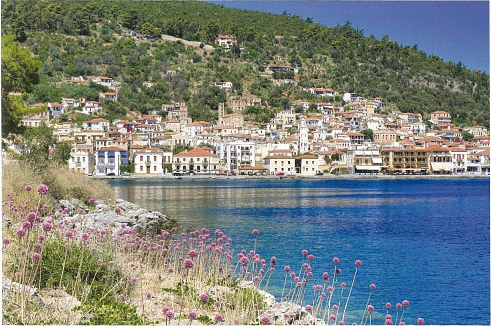
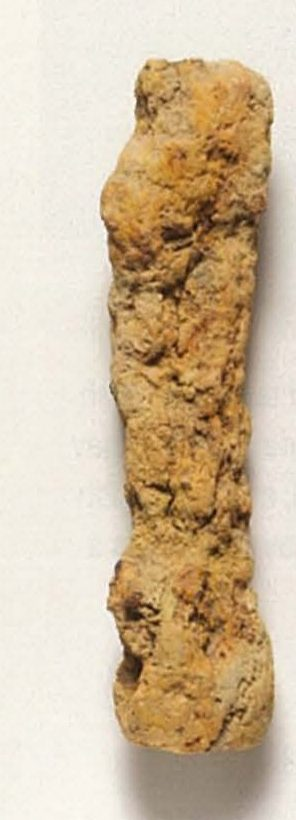
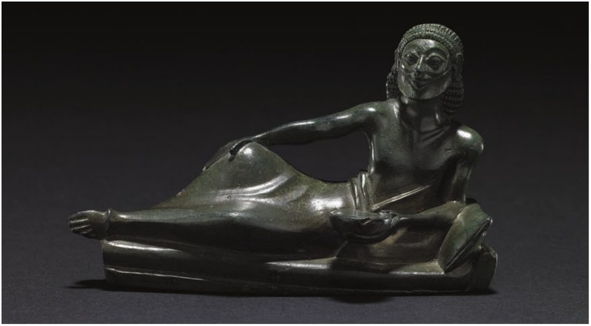
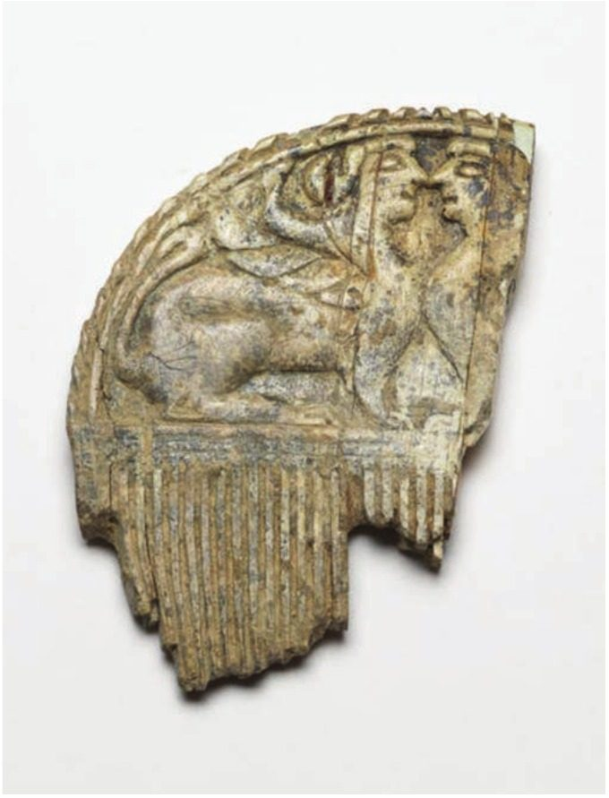

Spartan society to the Battle of Leuctra 371 BC · Lesson 18
The economy IV: exchange, iron and trade
Spartan tradition says Lycurgus gave Sparta clumsy iron money and shut out trade. Was Sparta really a society without money or trade?
Year 12 Ancient History · Section II, Option G · Present with → or space · Read on a phone with R

Connect · 3 minutes · cold call
From who did the work to how things were paid for
Helots farmed the kleroi and served on campaign; the perioikoi probably made goods, traded and fought; Spartiates were barred from making money. Cooley: the Spartiates “had to rely on a variety of goods and services provided by the perioikoi”.
Was Sparta really a society without money or trade? We test Spartan tradition (iron money, no gold or silver, no trade) against an inscription, objects found far from Laconia, and writers who lived through the period.
One key idea from Lesson 17, in one sentence.
Learning intentions and success criteria · 2 minutes
Today’s goals
- evaluate the image of Sparta as a society without money or trade
- plan a 12-mark response that integrates written and archaeological evidence
- explain what Plutarch claims about iron money and why
- explain what the war-fund inscription shows and why it is a different kind of evidence
- give evidence for goods that left Laconia and goods that came in
- plan a 12-mark answer with written and archaeological evidence in every paragraph
Iron money: Sparta’s bulky iron currency — probably bars or spits, not stamped coins (Plutarch’s translator calls it ‘iron coinage’). Coins: stamped metal, such as the Persian gold darics and silver staters of Aegina in today’s inscription. An inscription is a text found by archaeology: say what it is when you use it.
Note-making · today’s routine
How to structure your notes
questions and key terms
short phrases, arrows (→ led to), abbreviations (Plut. = Plutarch, Xen. = Xenophon)
- 1Listen and look firstDon’t copy while the slide is being explained.
- 2Write your own notes at each ✎ checkpointPhrases, not sentences. Arrows for cause and effect.
- 3Compare with the model notesThey appear one row at a time. Add what you missed in a second colour.
- 4Copy each cue question into the left columnLater, cover your notes and answer the cue questions from memory.
- 5Finish with a three-sentence summaryFive checkpoints: iron · the iron-money tradition · the war fund · private austerity, public wealth · trade.
Key vocabulary
Words you will use today
| Money | Meaning |
|---|---|
| obelos (pl. obeloi) | a metal roasting spit; bundles of spits served as early money in Greece (unit textbook) |
| iron money | the bulky iron currency Spartan tradition credits to Lycurgus |
| daric | the gold coin of the Persian empire (about 8.5 g) |
| stater | a coin; in today’s inscription, the silver stater of Aegina |
| mna · talent | units of value: 100 drachmas = 1 mna; 60 mnas = 1 talent (standard Greek values, not in Cooley) |
| pelanor | the name Clarke & Garner give a Spartan iron bar used as money (not in Cooley) |
| Evidence and trade | Meaning |
|---|---|
| currency | whatever a society accepts as money |
| inscription | a text cut into stone or metal; reading them is epigraphy |
| hoard | a group of coins or valuables buried together |
| export · import | goods sent out of a region · goods brought into it |
| austerity | plain, restrained living — or the public display of it |
| Gytheion | the perioikic town that was Sparta’s port and chief naval base |
Spelling: Cooley’s translators write minai, mnai or mnas for the same unit, and Aiginetan, Lakedaimonians, Lykourgos. In your own writing use Aeginetan, Lacedaemonians, Lycurgus — and be consistent.
1 · Iron · I do — a local metal with many uses
Iron: Laconia’s own metal
At Boia in south-eastern Laconia “traces of iron workings are common there” (W. G. Cavanagh, in Cooley). Cooley thinks such deposits were “presumably exploited by the perioikoi”.
archaeologyIn c. 399 BC Cinadon took a man he hoped to recruit to iron-works with “many knives, many swords, many skewers, many axes and hatchets, many sickles” (Xenophon, Hellenika 3.3.7, Cooley E53a). Xenophon does not say who worked there (Lesson 17).
writtenBefore silver coins spread, Greeks used metal spits (obeloi) as units of value: the coin names obol and drachma (‘handful’, of six spits) come from this, and bundles of iron spits were dedicated at the Heraion near Argos.
unit textbook · not in CooleyCooley: “Spartiates were not allowed to own gold or silver, and the iron money used in classical Sparta was only fit to facilitate fairly small everyday transactions.”
Iron money worked only at home: Plutarch says it “was impossible to transport to the rest of Greece and had no credibility as a currency”. The unit textbook adds that Sparta kept iron long after its neighbours moved to silver and struck no coins of its own until the 3rd century BC (not in Cooley).
1 · Iron · We do — reading an object with care
An iron bar — but whose, and when?

What does the textbook’s caption claim?
That Spartans used iron bars like this one, which it calls pelanors, as money after Lycurgus withdrew coinage. It retells the Lycurgus story as fact.
What does the textbook not tell us about the object?
Where it was found, when it was made, or which museum holds it.
So what can the photograph prove?
Only what an iron bar looks like after centuries of corrosion. Without a find-spot or date it cannot show that this bar was Spartan, classical, or ever used as money.
Use it as an illustration of the tradition, not as evidence for it. An object is only as useful as what we know about where and when it was found.
Notes checkpoint 1 of 5
Iron: a local metal, and early money
Write your own notes first. Then compare, row by row, and add what you missed in a second colour.
2 · The iron-money tradition · I do — the earliest description
Xenophon: no money-making, and a currency too bulky to hide
[2] But in Sparta Lykourgos refused to allow free citizens to have anything to do with money making; only activities which contributed to the freedom of the state were to be regarded as permissible occupations for its citizens. … [5] He also enacted the following measures to prevent the dishonest acquisition of money. First of all he devised a system of currency which made it impossible to bring into the house even as small a sum as ten minai without the knowledge of house owner or his servants, because it would take up an enormous amount of space and require a wagon to transport it. [6] Random official searches for gold and silver take place, and if any is found the owner is fined.
Xenophon, Constitution of the Lakedaimonians 7.2, 7.5–6 · an Athenian admirer of Sparta, c. 430–c. 350 BC; this work probably written in the late 390s or 380s BC · trans. B. Wilson · Cooley D53
What did Lycurgus forbid free citizens to do?
To make money: only activities for “the freedom of the state” were allowed.
What currency does Xenophon describe — and what metal?
One so bulky that ten minai needed a wagon. He never names the metal.
What do the searches suggest?
That some Spartans probably held gold and silver — otherwise why search for it? A ban suggests that the thing banned existed.
2 · The iron-money tradition · I do — Source 11.6, Extract A
Plutarch: iron the only money, and no trade
[9.1] … He started by banning all forms of gold and silver coinage and making iron the only form of legal tender. This form of coinage was both bulky and heavy, but he gave it minimal value, so that cash worth ten minai required a huge granary to hold it and a yoke of oxen to transport it. … [2] … He is even supposed to have used vinegar so that the red-hot iron would not be tempered properly, thus removing its effectiveness or use for any other purpose and robbing it of its strength and malleability. [3] … As a result it was impossible to buy foreign goods or to make even small purchases; no mercantile cargoes came to their ports …
Plutarch, Life of Lykourgos 9.1–3 · a Greek biographer and moralist, written c. AD 100 · trans. B. Wilson · Cooley D58
What did Lycurgus do, says Plutarch?
Banned gold and silver coins and made iron the only legal money — bulky, heavy and nearly worthless.
How sure is Plutarch of the vinegar?
Not sure: “He is even supposed to” — he reports a story, he does not vouch for it.
What effect does he claim?
No foreign goods and no merchant ships. His aim, he says, was “to eliminate totally all forms of inequality or discrimination”.
2 · The iron-money tradition · We do — compare the two writers
Xenophon or Plutarch: who is the better witness, and for what?
| Xenophon (Cooley D53) | Plutarch (Cooley D58) | |
|---|---|---|
| Date | probably late 390s or 380s BC — inside our period | c. AD 100 — nearly five centuries later |
| Author | an Athenian admirer who may have lived in Sparta | a biographer from Boeotia writing moral examples |
| The currency | bulky: ten minai “require a wagon”; metal not named | iron the only legal money; “supposedly” quenched in vinegar |
| Gold and silver | searched for, and the owner fined | all gold and silver coinage banned |
| Trade | citizens barred from money-making | no foreign goods, “no mercantile cargoes” |
| Reliability | well informed, but “probably depicts a somewhat idealised Sparta” (Cooley) | late; Cooley: unless he names a classical source, treat it “as secondary material” |
Judgement: Xenophon is the better witness for the classical period, and he describes a ban on private gold and silver — not an economy without money or trade. Plutarch’s fuller story is the later tradition.
Check for understanding · hinge question · hold up 1–4 fingers
Which detail appears in Plutarch but not in Xenophon?
- 1A currency too bulky to bring home unnoticed
- 2Official searches for gold and silver
- 3Iron quenched in vinegar so it was useless
- 4Citizens barred from making money
3. Only Plutarch has the vinegar — and he hedges it (“He is even supposed to”). Xenophon has the bulky currency, the searches and the ban on money-making; Plutarch’s passage (D58) does not mention searches.
Notes checkpoint 2 of 5
The iron-money tradition
3 · The war fund · I do — Source 11.6, Extract B: a different kind of evidence
Gifts “for the war”: a list cut in stone at Sparta
Given by the […], who are friends of the Lakedaimonians, for the war, four hundred darics
Given by the Aiginetans to the Lakedaimonians for the war, fourteen mnas and [ten staters]
(lines omitted)Given by those exiled from Chios who are friends
of the Lakedaimonians, one thousand Aiginetan staters.
(lines omitted)[…] thousand and of raisins
(lines omitted)[Given] by the Ephesians to the Lakedaim-
[onians for the] war, one thousand darics.
Inscription on two sides of a stone block, a public inscription at Sparta · c. 427 BC or later (date disputed) · IG V 1, 1 (text of W. T. Loomis, 1992) · trans. in Cooley B12. [ ] = letters lost from the stone and restored by editors; […] = lost and not restored.
What kind of evidence is this?
A public inscription, set up in Sparta in the period itself: contemporary, official and not written to praise Lycurgus.
What did the Lacedaemonians receive?
Persian gold darics, silver staters of Aegina, mnas of silver — and goods in kind, such as raisins.
Hodkinson, introducing the inscriptions: public inscriptions at Sparta, including “a unique war-fund donation list”, are “not attested until the late fifth century” — though, he adds, “we should not assume that it was a new practice”.
3 · The war fund · We do · 8 minutes — list the donors and the currencies
Reading the war fund
| Donor | Gift | What it is |
|---|---|---|
| [name lost], “friends of the Lakedaimonians” | 400 darics | Persian gold coins |
| the Aeginetans | 14 mnas and [10 staters] | money by weight (mnas) and in coins (staters, restored) |
| exiles from Chios | 1,000 Aeginetan staters | silver coins |
| the Melians; Molokros | 20 mnas of silver; a talent | silver |
| […]non and others (names damaged) | raisins; thousands of medimnoi | goods in kind (a medimnos is a dry measure) |
| the Ephesians | 1,000 darics | Persian gold coins |
Main gifts only, not every line.
Letters lost from the stone and filled in by editors. “[ten staters]” is an editor’s restoration, not a reading.
Cooley: “Nothing about the text of the inscription provides us with a certain date.” Scholars use letter shapes and ask when every donor could have helped Sparta: Loomis argues for 427 BC; Osborne and Rhodes suggest 427–412 BC.
In wartime, the Spartan state received gold and silver for the war. Does that contradict Plutarch — or only his picture of private life?
3 · The war fund · I do — model a judgement
Two kinds of evidence, two different questions
| Plutarch on iron money (D58) | The war-fund inscription (B12) | |
|---|---|---|
| Kind | written: a moral biography | an inscription: a public record cut in stone |
| Date | c. AD 100, about five centuries after the period | c. 427 BC or later — inside the period |
| Made for | readers who wanted moral examples | anyone at Sparta who could read it — probably to honour the donors |
| Says | no gold or silver coinage; no foreign goods | the state received gold darics and silver staters |
| Answers | what later Greeks believed about Lycurgus’ laws | how the Spartan state paid for a war |
The inscription is the stronger evidence for classical Sparta, because it is contemporary and public, but it does not simply cancel Plutarch: it shows the state handling gold and silver in wartime, which is consistent with a ban on private citizens holding them.
3 · The war fund · You do · 6 minutes · press K for the timer
Annotate the war-fund inscription: O, V, P, R, L
- O — one extract is a contemporary Spartan document, the other a biography written about 500 years later: which is which?
- V — what does each extract claim about gold, silver and trade at Sparta?
- P — Plutarch praises Lycurgus for curbing greed. Why would the Spartan state publicly list gifts?
- R — Plutarch introduces the vinegar detail with “He is even supposed to”. What does that signal?
- L — does a wartime state fund prove that ordinary Spartiates used gold and silver?
Your own words, in the margin. Then draw a ✗ to Plutarch (contradicts?) and a ✓ to the Laconian goods found abroad (section 5).
| Code | Model margin note |
|---|---|
| O | public inscription at Sparta, c. 427 BC or later; Plutarch c. AD 100 |
| V | Plutarch: no gold/silver coinage, no foreign goods · stone: state received darics (gold), Aeginetan staters + mnas (silver), goods in kind |
| P | thank and honour donors; show allies backing Sparta |
| R | Plutarch’s ‘He is even supposed to’ = a story he reports, not vouches for · the stone is contemporary and official, but damaged, restored, date disputed |
| L | wartime gifts to the state ≠ private citizens using coins |
Notes checkpoint 3 of 5
The war fund
4 · Private austerity, public wealth? · We do — the spoils of victory
Lysander’s gold: for the state, not for citizens
But the most sensible of the Spartiates, not least because of this, feared the power of money and that it was affecting the citizens; so they rebuked Lysander and begged the ephors remove all the silver and gold from the city as if an imported pollution. … [4] When the friends of Lysander opposed the proposal, and were eager that the money remained in the city, it was decided that money of this sort be put to public use; also if anyone was caught possessing this money for private use, they determined the punishment should be death, as if Lykourgus feared the coin, not the love of money which came with the coin.
Plutarch, Life of Lysander 17.1 and 17.4, written c. AD 100, drawing on the 4th-century historian Theopompus · events of c. 400 BC · trans. in Cooley E75
Who could hold the gold and silver?
The state: it was “put to public use”. A private citizen caught with it faced death.
Where had it come from?
The war. Persia had paid for Sparta’s fleet: Cyrus gave Lysander 10,000 darics in 408/7 BC (Plutarch, Lysander 4, Cooley E120).
The rule that Xenophon and the war fund imply, stated outright: public wealth, private austerity. Plutarch himself doubts it worked — public honour for money made citizens want it.
4 · Private austerity, public wealth? · I do — three writers inside or near the period
Did Spartans love money after all?
For there is no common state fund for the large-scale wars they are forced to fight. … The result is the opposite of the benefits the lawgiver wanted. For he has created a city without money, but individuals with a love of money.
Aristotle, Politics 2.9, 1271b10–19 · written 330s/320s BC, a critic explaining Sparta’s decline · trans. in Cooley D55
I know, too, that in former days they were frightened to be caught in possession of gold; whereas nowadays some of them are even happy to make a display of their wealth.
Xenophon, Constitution of the Lakedaimonians 14.3 · a chapter “generally considered later” than the rest; Cooley thinks it reflects his disillusionment after Leuctra · trans. B. Wilson · Cooley E70
… there is not in all Greece as much gold and silver as in private hands in Lakedaimon: this is because for many generations now it has been coming in there from all the Greeks, and frequently from foreigners too, but it does not go out anywhere.
Plato, Alcibiades 1 (authorship disputed), 122d–123b · Athenian philosopher, c. 429–347 BC; a dialogue set c. 433 BC · trans. in Cooley E72
Weigh them: Aristotle and the later Xenophon are critics looking back on decline; Plato’s speaker uses Sparta’s riches to make a point to a young Athenian. None is neutral — but all three, writing within a century of each other, describe Spartans who had or wanted wealth.
4 · Private austerity, public wealth? · We do — a writer and an inscription If time
Money kept outside Sparta?
The Lakedaimonians were prevented by their customs from bringing money into Sparta, as Poseidonios writes in his history, or from obtaining silver or gold, but did so nonetheless and deposited it with the neighbouring Arkadians.
Poseidonios of Apameia, FGrH 87 F48, a much later historian, quoted in Athenaios, Scholars at Dinner 6.23–25 (c. AD 200) · trans. in Cooley D59
To Xouthias, son of Philachaios, two hundred mnai. If he comes in person, let him take them. If he is dead, they are his sons’, once they have been young men (hebontes) for five years.
Bronze plaque, Tegea · mid-5th century BC · IG V 2, 159 · trans. in Cooley E73. A second text on the plaque records four hundred mnai of silver.
Careful: Cooley says the plaque “is often assumed to relate to a Spartiate, unable to deposit money at home”, but Hodkinson doubts it. Together the two sources may show private silver kept abroad — a possibility, not a proof.
4 · Private austerity, public wealth? · I do — sort the evidence
Did Spartans use coins at all?
Darics and Aeginetan staters in the war-fund list (B12, c. 427 BC or later); Lysander’s gold and silver coin kept for public use (E75, c. 400 BC).
inscription writtenEven Plutarch has each member bring “a very small sum of money” for extras (Lyc. 12, D63); Dicaearchus, writing c. 320–300 BC, gives “for the meat, 10 Aiginetan obols” (E77). Cooley warns these may describe later practice.
written · laterNESA’s marking guidelines list the “Discovery of a hoard of coins within the city of Sparta, which may suggest the use of coins as currency”. Neither Cooley nor Clarke & Garner describes it, so we cannot check its date or contents.
NESA · details not in CooleyThe unit textbook says Sparta struck no coins of its own until the 3rd century BC (not in Cooley). NESA gives no date or contents for the hoard: find both before you use it.
Foreign coins certainly reached the Spartan state, and, if the later writers are right, some money changed hands in the messes. Whether ordinary Spartiates used coins in our period is uncertain — keep NESA’s own hedge, “may suggest”.
4 · Private austerity, public wealth? · I do — the historians’ verdict
Austerity on show, wealth behind it?
These restrictions on the most common ways of conspicuous consumption meant that the Spartans appeared austere to other wealthy Greeks, but in spite of the modern connotations of the term ‘Spartan’ we should regard the Spartan lifestyle as comfortable prosperity masked by a display of austerity.
Cooley, Sparta (2023), introduction to wealth and property (D52–D59)
that Sparta’s public institutions and austere lifestyle in operation during the classical period were—on the long view—a temporary imposition upon a more enduring privately-oriented, wealth-based society.
S. Hodkinson, quoted in Cooley’s introduction to Spartan property and wealth (E71–E76), citing ‘Hodkinson, NSW notes 2000, ch. 13’
Cooley: “it is clear that great wealth existed in Sparta in all periods” — land, horses, chariot-racing victories, and the gold and silver in this lesson.
On this reading it was a rule about display: wealth existed, but a Spartiate was not to be seen spending it.
Check for understanding · gesture vote
“Spartan austerity was mostly for show.”
Agree
Partly
Disagree
Justify your vote with one named source: Xenophon, Plutarch, the war-fund inscription, Aristotle — or a historian.
4 · Private austerity, public wealth? · I do — the evidence in time
The money story: what we know, and from whom
Notes checkpoint 4 of 5
Private austerity, public wealth?
5 · Trade · I do — Laconian goods found abroad
What went out: Laconian goods far from Laconia

Cooley on this figure: “It need not, of course, show any individual diner, let alone a Spartiate one, since it could equally well have been made for external consumption.” Made for export, perhaps.
- 1Painted pottery, ItalyA Laconian hydria “found at Vulci in Italy as prized grave-goods” (Cooley, Fig. 3); the Arkesilas cup, c. 565–560 BC, was also found at Vulci (unit textbook).
- 2Bronzes, north-west Greece and the BalkansThe banqueter, “thought to have been found” at Dodona (E71); the bronze girl, “probably found at Prizren in Kosovo” (D64).
- 3The Vix krater, BurgundyFound in a Celtic grave in France; made in Laconia or at Taras, a Spartan colony — scholars still debate which (unit textbook).
- 4The mapLesson 16’s find-spot map shows these places. Its dashed lines join maker to find-spot; they are not trade routes.
Careful: a find-spot shows where an object ended up, not who carried it or how — trade, a gift and plunder all move goods.
5 · Trade · We do — imports in a city said to have none
What came in: ivory, metals and foreign money

Among finds from Sparta’s sanctuaries in the 8th–7th centuries BC: “bronze tripods, elaborate pottery, iron weapons, jewellery, carved ivories” (Cavanagh, in Cooley); his Figure 1 is a 7th-century ivory lion from the Sanctuary of Artemis Orthia. There were no elephants in Greece, so the raw ivory was imported. The C6 plaque’s Laconian lettering suggests some ivories were carved locally.
An “Ivory plaque showing departure of ship and crew”, from the lowest layer at Orthia, possibly as early as the late 7th century BC; its letters are Laconian (Cooley C6).
Tin for bronze had to be imported (unit textbook); Persian gold darics and Aeginetan silver staters reached the Spartan state (B12).
Plutarch says “no mercantile cargoes came to their ports”. What does this evidence do to his claim?
It contradicts it for the period of these finds: raw ivory and tin came in, and foreign coins reached the state (as gifts, not cargoes).
5 · Trade · I do — the people and the port
Who traded — and through which port?
Cavanagh: “The port of Gytheion must have been important from early on and was the site of shipyards for the Spartan fleet.” It was a perioikic town.
Cooley: the harbours were perioikic, and “we can assume that perioikoi were involved in overseas trade and fishery”. An assumption, not a record.
“Spartiates were not allowed to engage in any form of trade” (Cooley). How they got goods from the perioikoi: “the mechanism of exchange between the two groups remains unknown”.
But when they began to send out expeditions across the seas, or to campaign with infantry outside the Peloponnese, it became clear that neither currency made of iron nor the exchange of annual crops, as laid down by the laws of Lykourgos would make up for the shortfall in what they needed, [9] since the situation required a common currency and materials from abroad.
Polybius, Histories 6.49 · a Greek historian of the 2nd century BC, looking back · trans. in Cooley E74
Check for understanding · cold call · 3 minutes
One written and one archaeological piece of evidence for trade
Name the writer, the date, and what it shows.
e.g. Polybius (2nd c. BC): iron currency could not pay for wars abroad, which needed “a common currency and materials from abroad”.
Name the object or inscription, where it was found, and what it shows.
e.g. a Laconian hydria found at Vulci in Italy (Cooley, Fig. 3); carved ivories, from imported ivory, found at Orthia.
Notes checkpoint 5 of 5
Trade: what went out, what came in
Finish your notes
Summary: three sentences
- What was Spartan iron money, and who tells us about it?
- What does contemporary evidence show about gold, silver and trade?
- How should we explain the gap between the two?
Spartiates were not allowed to own gold or silver and used a bulky iron currency for small everyday payments: Xenophon, writing probably in the late 390s or 380s BC, describes the currency and searches for gold and silver, and Plutarch, writing about AD 100, turns this into a Sparta with no gold, silver or trade. Contemporary evidence complicates this: the war-fund inscription and Lysander’s spoils show the state handling gold and silver, critics such as Aristotle saw Spartans who loved money, and Laconian goods went abroad while ivory and foreign coins came in. The iron money therefore seems to have limited how wealth was displayed rather than whether it existed, which Cooley calls ‘comfortable prosperity masked by a display of austerity’.
6 · Answering HSC questions
The whole economy unit, examined in 2020
25 marks, about 45 minutes — about 1.8 minutes a mark. 12 marks ≈ 22 minutes.
“What evidence … provide” is not a NESA glossary key word. The marking criteria tell you what to do.
Land (15), technology (16), perioikoi and helots (17), exchange and trade (today): one answer draws on all four.
We take the question apart, read the criteria, the markers’ feedback and NESA’s list of points (checked against Cooley); you plan; then compare with a model plan and an annotated model answer.
HSC 2020 · Section II · Question 11 (c) · 12 marks
What evidence do archaeological and written sources provide about the Spartan economy in this period?
I do — take it apart; we do — the criteria and NESA’s list; you do — plan it.
HSC 2020 Q11(c) · I do — deconstruct the question
What the question — and the criteria — really ask
The top-band criterion: “Provides a well-developed explanation of what evidence archaeological and written sources provide about the topic”. So: name each piece of evidence, say what it shows about the economy, and how far it can be trusted.
Both, in every paragraph. In better responses, NESA reported, students could “make reference to specific evidence from named written sources and clearly identify archaeological evidence”. An inscription is a text found by archaeology: say what it is.
The syllabus’ four parts: land ownership, technology, the economic roles of perioikoi and helots, and exchange (iron bars, trade). Show how they connect: better responses could “show the relationship between these”.
To 371 BC. Date every source, and flag late ones — Plutarch, c. AD 100 — as late.
About 22 minutes · a thesis that says what the evidence shows · three paragraphs (land and labour · production and technology · exchange and trade) · about 450–600 words.
HSC 2020 Q11(c) · the marking guidelines and the markers’ feedback
What the markers rewarded
| Marks | Criteria (2020, part (c)) |
|---|---|
| 10–12 | Provides a well-developed explanation of what evidence archaeological and written sources provide about the topic · Integrates evidence from a wide variety of relevant sources to support the response · Communicates ideas and information logically and coherently using appropriate historical terms and concepts |
| 7–9 | Provides a sound explanation of what evidence archaeological and written sources provide about the topic · Uses evidence from a variety of relevant sources to support the response · Communicates ideas and information logically using appropriate historical terms and concepts |
| 4–6 | Provides some explanation of what evidence archaeological and written sources provide about the topic · Refers to one or more sources in the response · Communicates ideas and information using some appropriate historical terms and concepts |
| 1–3 | Makes general statement/s · May refer to source/s · May use historical terms and/or concepts |
The step up: 10–12 “Integrates evidence from a wide variety”; 7–9 “Uses evidence from a variety”. A gap: NESA published no sample answer for this part — only a list of points (next). Criteria and feedback quoted exactly from the NESA 2020 HSC Ancient History Marking Guidelines (Section II, part (c)) and the 2020 marking feedback for Question 11.
use historical terms specific to Sparta appropriately and accuratelymake reference to specific evidence from named written sources and clearly identify archaeological evidence to show features of the economy (c)provide a broad range of examples regarding the Spartan economy and show the relationship between these (c).
avoiding confusion with the Core Topic – Cities of Vesuvius: Pompeii and Herculaneumintegrating sources as evidence rather than relying solely on unsupported knowledge and understanding (b, c)sustaining the line of explanation and logical progression or organisation of ideas throughout the longer response (c).
HSC 2020 Q11(c) · We do — NESA’s “answers could include”, checked against Cooley (1 of 2)
What the marking guidelines listed: land, crafts, labour
Answers could include, Option G: NESA 2020 HSC Ancient History Marking Guidelines, Section II part (c) · points 1–4 of 6
Marker’s margin
HSC 2020 Q11(c) · We do — NESA’s “answers could include”, checked against Cooley (2 of 2)
What the marking guidelines listed: money, coins, trade
Answers could include, Option G: NESA 2020 HSC Ancient History Marking Guidelines, Section II part (c) · points 5–6 of 6
Marker’s margin
HSC 2020 Q11(c) · You do · 23 minutes · press K for the timer
What evidence do archaeological and written sources provide about the Spartan economy in this period? (12 marks)
| Claim | Written evidence | Archaeological evidence | Judgement | |
|---|---|---|---|---|
| 1 · Land and labour | ||||
| 2 · Production and technology | ||||
| 3 · Exchange and trade |
A thesis first · every row needs both kinds of evidence, named and dated · each row ends with a judgement: do the two kinds agree?
Start: “Written and archaeological sources agree that … ; they disagree about …”
Plan: HSC 2020 Q11(c) · a model plan, written for this lesson
Both kinds of evidence in every row
| Claim | Written evidence | Archaeological evidence | Judgement | |
|---|---|---|---|---|
| Thesis | The sources agree that helot farming and (probably) perioikic production freed Spartiates for war; they disagree about money and trade, where inscriptions and objects undercut the later picture of a closed Sparta. | |||
| 1 · Land and labour | helots worked the land so Spartiates could pay their mess dues | Tyrtaeus fr. 6–7 (A6): half the produce · Plutarch Lyc. 8 (D57): 9,000 lots · Aristotle Pol. 1270a (D54): land in few hands; women two-fifths | survey: Messenian villages that “evidently housed the helots”; sites near Sparta from modest to prosperous; Kopanaki storage jars (Cavanagh) | agree on helot labour; Plutarch’s equal lots probably a later ideal |
| 2 · Production and technology | Spartiates barred from money-making; production probably perioikic | Xenophon Lak. Pol. 7 (D53) · Herodotus 6.60 (D24): hereditary heralds, flute-players, cooks · Xenophon on Cinadon’s iron-works (E53a) | objects: lead figurines cast in moulds (Orthia); 10 cm bronze warrior; Laconian black-figure, the Arkesilas cup (Lesson 16) | objects show what was made; only writers suggest who made it — makers unnamed |
| 3 · Exchange and trade | iron money and no trade: true of private display, not of the state or of trade | Plutarch Lyc. 9 (D58) v. Xenophon’s searches (D53) · Lysander (E75) · Aristotle (D55) | war fund (B12); a coin hoard (NESA: check its date); hydria at Vulci; ivories at Orthia; Vix krater | the closer in date, the more gold, silver and trade appear |
| Conclusion | An economy built to free a citizen elite for war; Cooley’s “comfortable prosperity masked by a display of austerity”. | |||
HSC 2020 Q11(c) · annotated model · thesis and paragraph 1 of 3
Say what the evidence shows — then where it agrees
Model written for this lesson (the unit’s model plan MR-7, corrected and written out) · thesis and paragraph 1 of 3
Marker’s margin
HSC 2020 Q11(c) · annotated model · paragraph 2 of 3
Production: what objects show, and what only writers can tell
Model written for this lesson · paragraph 2 of 3
Marker’s margin
HSC 2020 Q11(c) · annotated model · paragraph 3 and conclusion
Where the evidence disagrees — and why
Model written for this lesson · whole answer ≈ 600 words, about 22 minutes
Marker’s margin
HSC 2020 Q11(c) · three answers that fall short
Why answers drop marks
Sparta’s economy was based on farming. The helots worked the land and gave half their crops to the Spartans. The perioikoi made goods and traded, and the Spartans used iron bars instead of coins …
Mostly accurate, but no source is named or weighed — the markers’ area to improve: “relying solely on unsupported knowledge and understanding”.
Plutarch says Lycurgus divided the land into 9,000 lots and banned gold and silver. Xenophon says citizens could not make money. Aristotle says the land fell into the hands of a few …
Named written sources, but no archaeological evidence at all, and little on what each shows. The top band “Integrates evidence from a wide variety of relevant sources”.
Plutarch proves that the Spartans used only iron bars and never traded, because no merchant ships came to their ports.
Plutarch wrote about AD 100 and hedges parts of the story; the war-fund inscription contradicts him, and Laconian goods found abroad show that goods left Laconia.
Written for this lesson to show the marking criteria — not real student answers.
HSC 2020 Q11(c) · Self-mark and peer check
Mark your own plan
Fewer than five ticks? Add the missing move in a second colour.
Swap plans. Tick each of NESA’s six points your partner covers (slides 37–38), and add one they missed.
Outline the evidence for Spartan trade in this period. (4 marks)
To what extent was Sparta a society without money in this period? (12 marks)
Practice and review · 1 of 7 · sequencing · Chapter 11 Activity A
Put these in order, earliest first
Write the letters in order and add a date or approximate period for each.
- APlutarch writes his Life of Lycurgus.
- BA Laconian workshop paints the Arkesilas cup.
- CTyrtaeus’ Eunomia records calls for the land to be redistributed.
- DThe Athenians inscribe a shield captured from the Spartans at Pylos.
- EKing Agis IV proposes dividing the land into 4,500 Spartiate lots.
- FAristotle writes that almost two-fifths of the land is owned by women.
- GA workshop in Laconia or at Taras makes the Vix krater.
Practice and review · 1 of 7 · sequencing · the answer key
The economy evidence in order
Practice and review · 2 of 7 · true, false, justify
True or false? Justify with a source
- 1The war fund inscription shows that the Spartan state never handled gold or silver. False — it lists gifts to the Lacedaemonians “for the war”, including “one thousand Aiginetan staters” and a thousand darics (Cooley B12).
- 2Xenophon’s account of Lycurgus’ currency names iron as its metal. False — he describes a currency that would “require a wagon to transport it” but never names the metal (Cooley D53).
- 3Plutarch presents the vinegar story as certain. False — “He is even supposed to have used vinegar” (Cooley D58): he reports it, he does not vouch for it.
- 4Cooley thinks iron money was used in classical Sparta. True — “the iron money used in classical Sparta was only fit to facilitate fairly small everyday transactions”.
- 5After Lysander’s victory, Spartiates were allowed to keep gold and silver for private use. False — it was kept for public use, and “if anyone was caught possessing this money for private use, they determined the punishment should be death” (Cooley E75).
- 6The text of the war-fund inscription gives its date. False — “Nothing about the text of the inscription provides us with a certain date” (Cooley): c. 427 BC or later.
- 7The raw ivory for the carvings found at Orthia had to come from outside Greece. True — there were no elephants in Greece. Cavanagh lists “carved ivories” among finds from Sparta’s sanctuaries in the 8th–7th centuries BC, and his Figure 1 is a 7th-century ivory lion from Orthia (in Cooley).
- 8Cooley says the bronze banqueter must show a Spartiate diner. False — “It need not, of course, show any individual diner, let alone a Spartiate one” (Cooley E71).
Practice and review · 3 of 7 · cloze · written for this lesson
Fill the gaps
- Plutarch says Lycurgus made iron the only form of legal tender.
- Plutarch says Lycurgus is even supposed to have used vinegar so that the red-hot iron would not be tempered properly.
- The war-fund inscription records a thousand darics, Persian gold coins, from the Ephesians.
- Exiles from Chios gave a thousand Aeginetan staters.
- The gold and silver brought home by Lysander was put to public use.
- Sparta’s chief harbour and naval base was the perioikic town of Gytheion.
- A Laconian hydria was found as grave-goods at Vulci in Italy.
- Traces of iron workings are common at Boia in south-eastern Laconia.
Practice and review · 4 of 7 · write an analytical paragraph · HSC-style, written for this lesson
How far does the evidence support Plutarch’s picture of Sparta as a city without money or trade?
The evidence supports Plutarch’s picture only for the private display of wealth, not for the Spartan state or for trade. Plutarch, writing about AD 100, claims that Lycurgus banned ‘all forms of gold and silver coinage’ so that ‘no mercantile cargoes came to their ports’, and Xenophon, writing probably in the late 390s or 380s BC, confirms a bulky currency and ‘Random official searches for gold and silver’. Yet those searches imply that some Spartans held precious metal, and the war-fund inscription of c. 427 BC or later lists Persian darics and Aeginetan staters given to the Lacedaemonians for the war. Goods moved too: a Laconian hydria was ‘found at Vulci in Italy as prized grave-goods’, and the carved ivories found at Orthia were made from imported ivory. Plutarch was a moralist praising Lycurgus centuries later, and his own ‘He is even supposed to’ shows that he relied on tradition, whereas the inscription is a contemporary public record — though only of wartime gifts to the state. The evidence therefore suggests, as Cooley argues, ‘comfortable prosperity masked by a display of austerity’: the iron money limited what citizens could show, not what Sparta held or traded.
Practice and review · 5 of 7 · extended response · HSC-style, written for this lesson (Chapter 11, Activity E)
To what extent does the archaeological evidence challenge the picture of an equal and austere Spartan economy found in the written sources? (15 marks)
Use evidence from relevant sources. Plan it in four moves:
- Thesis: decide how far the objects and the survey overturn, qualify or support the written picture.
- Land: Plutarch’s equal lots (Cooley D57) against Aristotle (D54) and the survey’s mix of modest and prosperous sites (Cavanagh) — Lesson 15.
- Technology and trade: the Vix krater, the Arkesilas cup and mirrors against Plutarch’s claim that superfluous crafts died out (D58) — and his own remark that furniture was “superbly made there” — Lesson 16.
- Exchange: iron money (D58; Xenophon, D53) against the war-fund inscription (B12); judge Cooley’s and Hodkinson’s interpretations — this lesson.
A trap to avoid: the war-fund list is an inscription, not an object found abroad — say what kind of evidence each item is.
Practice and review · 6 of 7 · Chapter 11 review, questions 1–5
Chapter review: the economy (1)
- What is a kleros, and who worked it? A lot or allotment of land: the estate that supported a Spartiate and paid his mess contribution. Helots worked it and handed over part of the harvest — half, says Tyrtaeus (Cooley A6), or a rent fixed in advance, says Plutarch (D36).
- According to Plutarch, how many lots were made for Spartiates and for perioikoi, and what did each Spartiate lot produce? 9,000 lots for the Spartiates and 30,000 for the perioikoi; each Spartiate lot produced 70 measures of barley a year for the man and 12 for his wife, with other fresh produce (Lykourgos 8, D57). Plutarch adds that some said Lycurgus made only 6,000 lots.
- Name two groups other than male Spartiates who owned land, and one special kind of Spartiate holding, with evidence. Women: “almost two-fifths of the whole country is owned by women” (Aristotle, D54). Perioikoi: “Perioikoi also owned their own land” (Cooley). The kings held royal estates: “specified tracts of high quality land in many of the territories of the perioikoi” (Xenophon, D9). Helots owned none.
- Explain two reasons why historians doubt that equal lots existed in classical Sparta. Aristotle, much closer in time, saw land “fallen into the hands of a small minority” and says nothing of an original equal division (D54); and land passed by inheritance and dowries — Cooley: “In the classical period, land was held as private property which was passed down the generations through inheritance and dowries”. Cooley finds no evidence that holdings “were, or ever had been, on a similar scale”.
- What does intensive survey reveal about Laconia and Messenia? In Messenia, “larger village communities; these evidently housed the helots who worked the land for the Spartans”; near Sparta, sites “ranging from the modest to larger and more prosperous ones”, and survey “has been used to argue” that smaller sites became fewer (Cavanagh, in Cooley). Survey cannot show who owned the land.
Practice and review · 7 of 7 · Chapter 11 review, questions 6–9
Chapter review: the economy (2)
- Describe two ways bronze objects were made, with an example of each. Bronze is copper mixed with tin. It was cast in moulds, like the 10 cm bronze warrior found at Sparta (Cooley Fig. 2), or hammered from sheet, like helmets and the bronze facing over a shield’s wooden core — only the facing of the shield captured at Pylos survives (Cooley B13).
- What does the Arkesilas cup reveal about Laconian skill and trade? Skill: fine black-figure painting on a pale slip, with a detailed scene of King Arcesilas of Cyrene overseeing goods being weighed — silphium, says Cavanagh (in Cooley); others suggest wool. Trade: it was found at Vulci in Etruria, so Laconian pottery travelled — though we do not know who carried it there.
- Compare Plutarch’s iron money with the war fund inscription as evidence for Spartan exchange. Plutarch (c. AD 100, a moral biography) says gold and silver coinage was banned and no trade came in (D58); the inscription (c. 427 BC or later, a public record) shows the state receiving darics, staters and silver for the war (B12). The inscription is closer and contemporary, but covers only wartime gifts to the state; both may be partly right — private austerity, public wealth (Lysander, E75).
- Evaluate Cooley’s view that the Spartan lifestyle was comfortable prosperity masked by a display of austerity. Largely convincing for wealthy Spartiates: Xenophon’s searches imply hidden gold and silver, Aristotle saw “individuals with a love of money” (D55), Xenophon’s later chapter admits some now displayed their wealth (E70), and Hodkinson calls austerity “a temporary imposition” on a wealth-based society. But the restrictions were real — messes, plain dress, iron money — and poorer Spartiates who could not pay their mess dues lost citizenship.
Exit ticket · before you leave
Two sentences
One written and one archaeological piece of evidence about Spartan money or trade — and what each shows.
Plutarch or the war-fund inscription: which is better evidence for classical Sparta, and why?
Next lesson: the Greek writers’ views of Sparta — who wrote, when, and why, and what each is reliable for. Your plans come back with the model plan.
Sources and credits
Where everything comes from
Quoted from the translations in M. G. L. Cooley (ed.), Sparta, LACTOR Sourcebooks in Ancient History 21, 2nd edn (Cambridge University Press, 2023): Xenophon, Constitution of the Lakedaimonians 7.2, 7.5–6 and 14.3 (D53, E70, trans. B. Wilson) and Hellenika 3.3.7 (E53a); Plutarch, Life of Lykourgos 8, 9 and 12 (D57, D58, D63, trans. B. Wilson) and Life of Lysander 4 (E120) and 17.1–2, 4–5, after Theopompos (E75); Aristotle, Politics 1270a and 1271b (D54, D55) and 1306b (D26); Plato, Alcibiades 1.122d–123b (E72); Polybius 6.49 (E74); Poseidonios in Athenaios 6.23–25 (D59); Dikaiarchos in Athenaios 4.19 (E77); Tyrtaios frs 6–7 (A6, trans. K. Hughes); Herodotus 6.60 (D24, trans. B. Wilson); Xenophon, Constitution 15.3 (D9); the Spartan war-fund inscription, IG V 1, 1 (B12); the Xouthias plaque, IG V 2, 159 (E73); the ivory ship plaque (C6); the Pylos shield (B13); the bronze banqueter (E71), the bronze girl (D64), a gold daric (E155b), the bronze warrior and the Vulci hydria (Cooley Figs 2–3). Cooley’s introductions to wealth and property (D52–D59) and to Spartan property and wealth (E71–E76), his note on the perioikoi and his notes on authors and on B12, E70 and E77; W. G. Cavanagh, ‘Introduction to Lakonian Archaeology’, and S. Hodkinson, ‘Introduction to the Epigraphy of Lakonia and Messenia’, both in Cooley; S. Hodkinson’s conclusion, as quoted there.
Not in Cooley (from the unit textbook, Chapter 11): Plutarch, Lysander 17.3 on obols and drachmas; the iron spits at the Heraion near Argos; Sparta’s first coinage in the 3rd century BC; Agis IV’s lots (Plutarch, Agis 8); the dates of the Arkesilas cup and the Vix krater. Clarke & Garner, ch. 8, on bone replacing ivory.
- The modern town of Gytheio, built on the site of ancient Gytheion — the perioikic harbour town that served as Sparta’s chief naval base — Clarke & Garner, Fig 6.3
- A corroded iron bar that Clarke & Garner identify as a Spartan ‘pelanor’ (iron money). The textbook gives no find-spot, date or museum, so the identification cannot be checked — Clarke & Garner, Fig 6.9
- Bronze figure of a reclining banqueter from the support of a bronze bowl; probably made in Laconia c. 530–500 BC and thought to have been found at Dodona in north-west Greece; British Museum 1954,1018.1 (Cooley E71). It need not show a Spartiate — Bradley, Fig 3.32
- An ivory comb with a carved scene, broken at one side. Bradley’s caption gives no date or find-spot — Bradley, Fig 3.27
Books: Clarke & Garner, Spartan society textbook (school copy); P. Bradley, The Ancient World Transformed (Cambridge University Press, 2014).
Textbook images are reproduced for teaching, with the source given under each one. Drawn for this lesson: the money-story timeline, the Activity A timeline, and the comparison and planning tables.
HSC question, marking criteria, “answers could include” and marking feedback: NSW Education Standards Authority, 2020 HSC Ancient History examination, marking guidelines and feedback. © NESA.